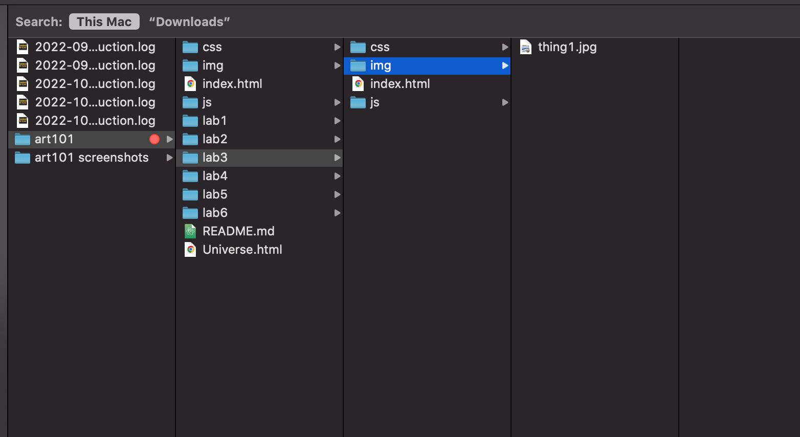
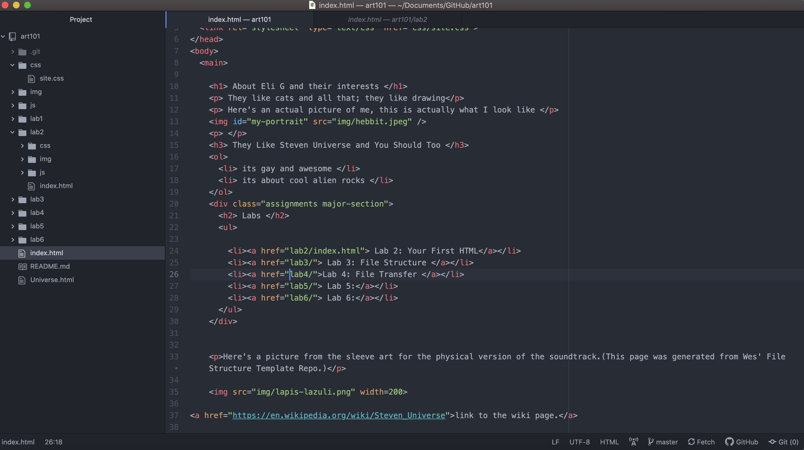
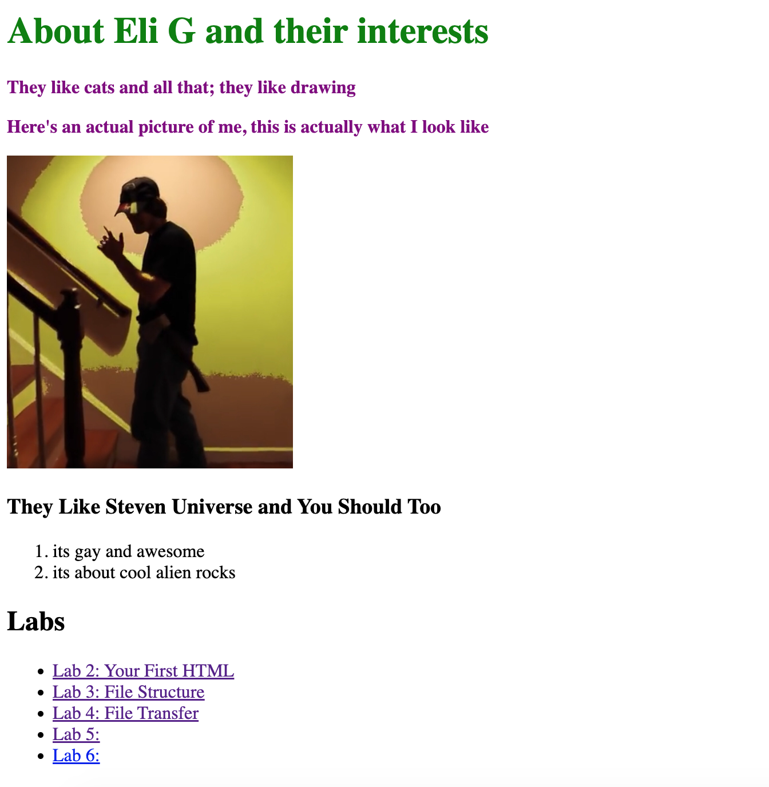

The idea of this lab was to further create a local file structure on my computer and add index.html files.
It was easy creating the file structure once I got the hang of it, but I had some difficulty creating index.html files and making them work right.
Well you are looking at the index.html file I created. Here is the file structure that I made:
this next one is the final look of the browser with the screenshot of the Atom code. trippy, right?

number 3
last one vv
